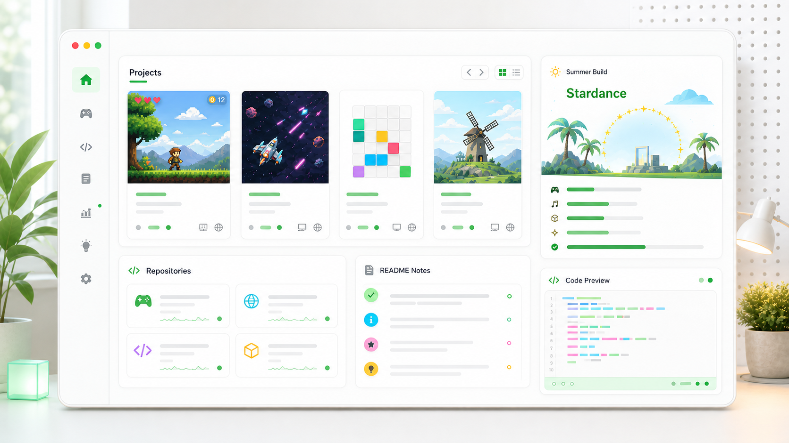

Game
Golf Dreams
A from-scratch arcade golf prototype with breezy courses, aiming, shot power, scorecards, club cards, and upgrade screens.
JavaScript
Three.js
Playable

Project directory
Game
A from-scratch arcade golf prototype with breezy courses, aiming, shot power, scorecards, club cards, and upgrade screens.
Game
A browser build of Open Golf with party-room features, synced shots, scorecards, and chat, published here so visitors can try it directly.
Summer program
Stardance by Hack Club is part of the current build log: make technical projects, track hours, and use the summer to turn experiments into shipped work.
Website
The personal homepage itself: project cards, browser-game links, README help, contact pages, and a simple structure that can grow with more repos.
An OS that is focused on food and more.
Knicks-Light-Switch-Case RepositoryPublic GitHub repository.
logdegret.github.io CSSMain GitHub Pages homepage for Logdegret.
v4nomnom WebBrowse the web securely and privately, powered by UV.
HunterGames JavaScriptGame projects and playable browser builds.
Birdide-Ball-3d-Print 3D PrintPublic GitHub repository.
plato-labs CSSPublic GitHub repository.
Odoggle JavaScriptPublic GitHub repository.
omniposter RepositoryPublic GitHub repository.
Gevansesh HTMLPublic GitHub repository.
introvertaiwaitlist RepositoryPublic GitHub repository.
AiNotesApp TypeScriptPublic GitHub repository.
Java-Pet-Program JavaPublic GitHub repository.
What I am working on
The page is organized around real work instead of only repository names. Each track can turn into a fuller project card when it has a demo, screenshots, or a writeup.
Keep the games easy to open, explain controls clearly, and link source when the files are public.
Capture what shipped, what changed, and what still needs polish during the summer build window.
Make every project easier to understand with a clear status, run instructions, screenshots, and next steps.
Add exact repo cards as more public projects are ready to feature on the homepage.
Project help
A good project page should answer the questions someone has before they clone, play, test, or contribute. It does not need to be huge. It needs to be honest, specific, and easy to scan.
Open with one plain sentence: what the project does, who it is for, and why it exists.
Include the exact command or link someone needs first, then list any optional setup afterward.
Tell visitors what works, what is unfinished, and what you want to improve next.
Screenshots, controls, demo links, credits, license notes, and a changelog make the project easier to trust.
Next update
I can add a complete live-style directory with every public repository, language tags, descriptions, and last-updated dates once GitHub access is available or you send the repo list. For now, this page highlights the projects already present in the site and the known Stardance work.